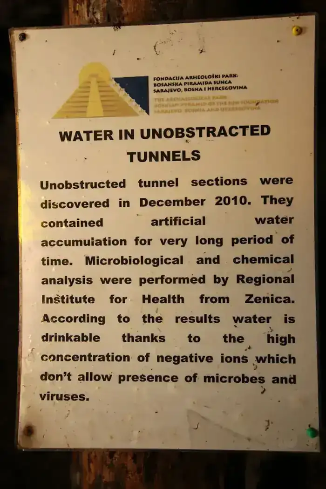

The claim
In 2005 the Bosnian-American businessman Semir Osmanagić announced that a group of hills near Visoko — principally Visočica — were in fact pyramids built by an unknown civilisation around 12,000 years ago. He named them the Pyramid of the Sun, the Pyramid of the Moon, the Pyramid of the Dragon, and so on, and reported tunnels, concrete-like blocks and ancient inscriptions.
Maps, diagrams and images


The claim found a large audience, a foundation, and a tourist economy. It has also produced years of excavation, some of it damaging genuine archaeological sites.
What geologists found
- The "pyramid" faces are bedding planes. Visočica is a hill of layered sedimentary rock — breccia and conglomerate — tilted and eroded into a roughly pyramidal shape. The regular "steps" are the layers, not courses of masonry.
- The "blocks" are natural. The angular slabs are fractured bedrock and tectonic blocks, a common feature of the local geology.
- The "tunnels" are old mines. The passages under Visoko are documented medieval and later mining galleries, not a prehistoric complex.
- The dating is not supported. There is no archaeological assemblage, no inscription in situ, and no structure that requires builders.
In 2006 the European Association of Archaeologists issued a statement calling the project pseudoarchaeology and expressing concern about the destruction of real medieval and earlier remains. Individual geologists and archaeologists — including specialists sent by Bosnian institutions — reached the same conclusion independently.
Osmanagić's response has been that the experts are defending a closed paradigm. That is a familiar move in this archive: it converts the absence of evidence into evidence of a cover-up, the same shape as Tartaria and phantom time.
Why it worked
Because the hills look like pyramids from certain angles, the country had a hard recent history and wanted a grand ancient identity, and the claim arrived with a photogenic story, a visitor centre and a budget. Tourism is a real force in pseudoarchaeology, and it is not a small one.
The honest comparison is Devils Tower: a natural formation with a striking, regular geometry that looks designed. Geology produces regular shapes constantly — columns, layers, joints — and the test is always the same: is there anything that could only have been made?
Sources for this page
- Wikipedia, “Bosnian pyramid claims” — history, geology, professional responseen.wikipedia.org
- European Association of Archaeologists, declaration on the Bosnian pyramid project (2006)e-a-a.org
- Smithsonian Magazine, “The Bosnia-Atlantis connection”smithsonianmag.com
Open resources on this topic
- PapersOpen-access articles: DOAJ · PubMed Central · Internet Archive Scholar
- BooksPublic-domain and borrowable copies: Open Library · Project Gutenberg · Google Books · Internet Archive
Cite this page
Momin, S. (2026). The Bosnian Pyramids. The Larger World Archive. https://drsamonline.github.io/LARGE_GLOBE/bosnian-pyramids.htmlMomin, Sohil. “The Bosnian Pyramids.” The Larger World Archive, 2026, https://drsamonline.github.io/LARGE_GLOBE/bosnian-pyramids.html.Momin, Sohil. “The Bosnian Pyramids.” The Larger World Archive, 2026. https://drsamonline.github.io/LARGE_GLOBE/bosnian-pyramids.html.@misc{the2026bosnian,
author = {Momin, Sohil},
title = {The Bosnian Pyramids},
year = {2026},
howpublished = {The Larger World Archive},
url = {https://drsamonline.github.io/LARGE_GLOBE/bosnian-pyramids.html},
note = {Last reviewed 20 November 2026}
}Last reviewed 20 November 2026 · Corrections policy · this page is not peer reviewed